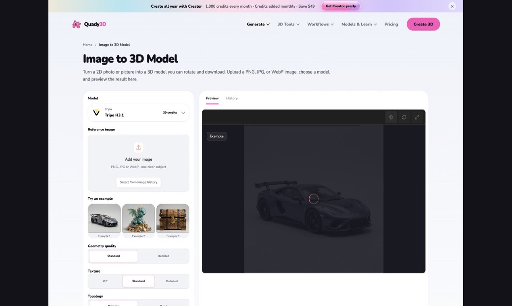

Quady3D AI workflow note
Game Scene Asset Delivery Checklist
A generated model becomes reusable scene content only after its delivery contract is clear. Use this checklist before an asset moves from inspection into Blender or a game engine.

A browser workspace can speed up the first asset pass; engine readiness still depends on the checks below.
Geometry and scale
- Confirm world units, up axis, forward direction, and export scale.
- Inspect silhouettes from front, side, back, top, and perspective views.
- Check topology, normals, disconnected parts, hidden faces, and unnecessary density.
- Place the pivot for snapping, hinges, floor contact, rotation, or modular assembly.
Materials and textures
- Name material slots consistently across variants.
- Verify UV scale and seams where modules meet.
- Confirm delivered PBR channels and destination shader mappings.
- Match texture resolution and compression to the expected camera distance.
Scene assembly
- Measure connection faces and snap points on walls, floors, doors, props, and trim.
- Keep coordinate conventions identical across the kit.
- Build simple collision shapes instead of relying on the render mesh.
- Record socket names, attachment points, and required hierarchy.
Performance
- Define triangle and material budgets before creating LODs.
- Inspect silhouette changes at each LOD transition.
- Check draw calls, texture memory, overdraw, and collision complexity.
- Test in a representative scene, not only an empty viewport.
Reproducible handoff
Store the source reference, selected generation path, exported file, inspection notes, repair decisions, and engine test results together. A workflow such as Quady3D Image to 3D can help create and inspect the initial model, but the checks above determine whether the asset is ready for reliable scene assembly.